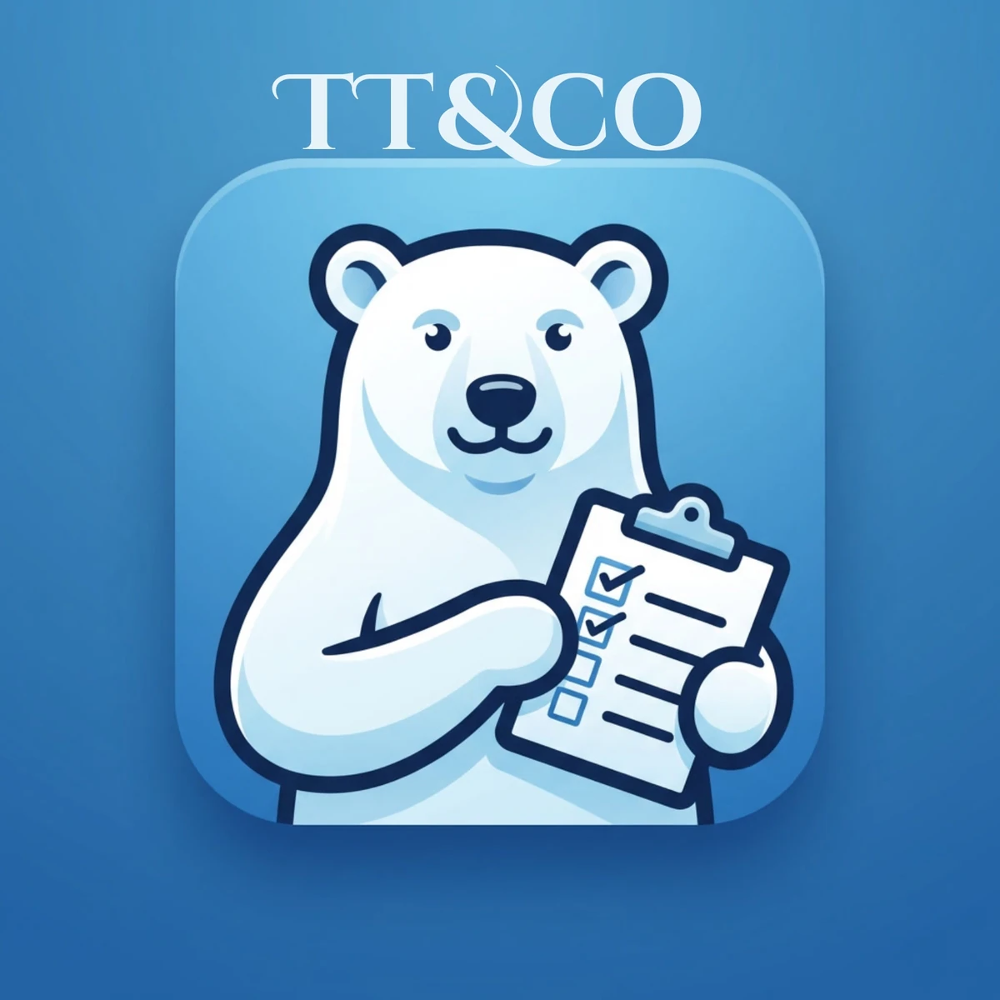

Hi, I'm Josh.
Built by Josh Studio started in 2025 as a one-person creative practice and became Built by Josh Studio LLC in 2026 — a small set of well-designed digital products under one roof. The work splits across three distinct lines, by design — productivity tools that solve a real problem, art that means something on a wall, and children's educational books for kids. Each line is its own brand, with its own voice and visual identity, but everything ships from the same studio with the same standard: real-world tested, no bloat, no filler.
I run all of it solo. That's not a constraint — it's the point. Every workbook formula, every Notion module, every zodiac palette is decided by one person who actually uses the thing. There's no committee, no roadmap-by-vote, no "minimum viable product" with broken corners. The studio is small on purpose so the work can be opinionated and complete.
What I bring to the work
I've been cooking daily for about 25 years — I learned by watching my father most nights growing up, and I still use the finger rice method he taught me.
I'm a published novelist writing two series. Overlayed Echoes — a near-future LitRPG about friends, games, and what happens when the story turns on the storyteller — is available on Amazon today as the full-length first book of a five-book arc. The second series, Ebonspire Chronicles, is a dark fantasy noir following an immortal detective in a volcano-built city of stratified magic and institutional rot.
Built by Josh Studio LLC is the Kansas company I formed to run both brands, and every Tynkr Tools & Co product — every budget workbook, every Notion OS template — has been in my own budget or my own workflow for months before it shipped. Design, build, copy, support, ops — all of it is one person across both brands, and that's the only way the work stays this opinionated.
The Three Brands

Tynkr Tools & Co
Founded 2026. Notion OS templates and Excel / Google Sheets workbooks for budgeting, planning, and creator business management. The productivity-first arm of the studio.
Built by Josh Studio (Zodiac Art)
The art arm. Western and Chinese zodiac digital prints, oil-landscape series, and Lunar New Year landscape collections — designed to print, frame, and last.
Little Acre Learning
Educational coloring & activity books for kids ages 2–10.
Visit Little Acre Learning →Same studio, three distinct product lines. They share the brand voice — useful, well-built, no nonsense — but the audience and use case are entirely separate.
Beyond the Studio
I also write fiction under the pen name J.S. Warden. My debut novel, Overlayed Echoes, is a near-future story about friendship and what happens when the games you love stop being games — it's the first book of a five-book series, now on Amazon. Book One of Ebonspire Chronicles, my dark fantasy detective noir series, is out now too. More about the fiction →
I also publish on YouTube as Tales of Ink & Shadows Studio — a creative channel covering the writing, the studio process, and the occasional rabbit hole.
And I cook on camera. Josh & Jordan's Kitchen is the YouTube channel I share with Jordan — real home cooking & baking. Josh handles savory home cooking — weeknight staples, American comfort food, and the Vietnamese classics he grew up with. Jordan handles the oven — fresh breads, sweet treats, pastries, and baking fundamentals. It pairs with my cookbook, Nước Mắm — A Vietnamese Family Cookbook.
Where the Studio Lives
Built by Josh Studio is based in Kansas. All products are digital and delivered as instant downloads. Customer support, pre-purchase questions, and partnership inquiries all come to one inbox: josh@builtbyjoshstudio.com. Response time is typically 1–2 business days.
Tynkr Tools & Co products are sold on Etsy and on this site directly. Zodiac art prints are on the BBJ Studio Etsy shop. Both shops handle digital delivery automatically — no waiting, no accounts. Prefer the zodiac art already printed? The twelve western-sign celestial artworks are on posters, canvas prints, apparel, and home goods at the studio’s Redbubble shop.
Built by Josh Studio LLC is a Kansas limited liability company that operates the Tynkr Tools & Co brand and publishes the studio's zodiac art, books, and cookbook directly. The LLC was formed in 2026 and is based in Kansas.
Connect With the Studio
Find the studio elsewhere on the web:
- Linktree All studio links in one place
- Substack Tynkr Tools & Co newsletter
- YouTube Tales of Ink & Shadows Studio
- YouTube Josh & Jordan's Kitchen — Real Home Cooking & Baking
- Etsy Tynkr Tools & Co shop
- Etsy Built by Josh Studio shop
- Redbubble Zodiac art on finished goods
- Books by J.S. Warden Overlayed Echoes — Book One of a Five-Book Series